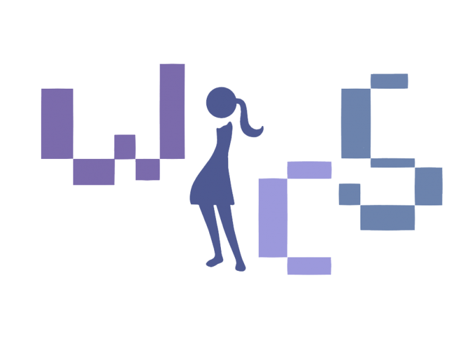
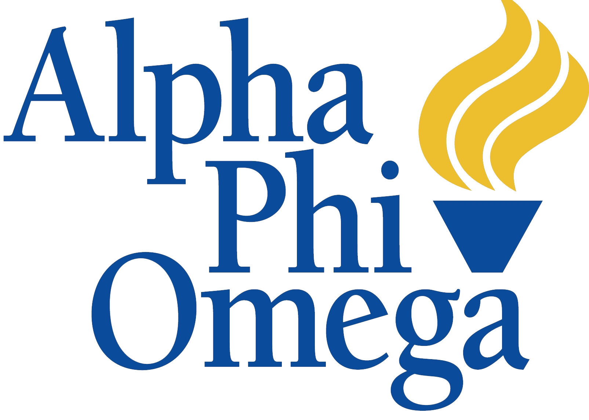

RESUME
EDUCATION
 University of California, Irvine
Oct 2014 - Dec 2018
University of California, Irvine
Oct 2014 - Dec 2018
Computer Science, B.S.
Irvine, CA
RELEVANT COURSEWORK:
- Introduction to Software Engineering
- Introduction to Computer Organization
- Intermediate Programming (in Python)
- Data Structures Implementation and Analysis
- Principles in System Designs
- Principles of Operating Systems
- Introduction to Data Management
- Projects in Databases and Web Applications
- Human Computer Interaction
- Software Testing and Quality Assurance
- User Interaction Software
- Design and Analysis of Algorithms
- Software Design I
LANGUAGES
Java Python C C++ HTML CSSTOOLS
MySQLWorkbench GitHubWORK EXPERIENCE
Google igniteCS
April 2017 - May 2017
Coding Mentor
Garden Grove, CA
Four week community outreach program designed and driven to educate high school students about computer science. We practiced computer science fundamentals through the utilization of Makey Makey, Scratch, and Processing.
Spoon University UCI
Feb 2016 - March 2017
Co-Chapter Founder and Marketing Director
Irvine, CA
Maintained the presence of the organization on campus through marketing campaigns and fundraising events with local businesses. Also planned themed community events that integrate 5 Spoon University chapters in Southern California.
AMC Glass Co.
June 2012 - June 2015
Office Assistant
San Jose, CA
Distributed marketing and communication materials to local community. Entered customer information and custom orders into system database. Assisted customers with pick-up orders and provided quotes for custom orders.
ORGANIZATIONS
 Women In Computer Science - Mentor
Oct 2015 - present
Irvine, CA
A social and professional organization established to help and encourage women to pursue a college degree and a successful career in the computer science field.
Mentor to 2 mentees
Participated in outreach workshops such as igniteCS. Read more about igniteCS and my experience here: *add link for both.
 Alpha Phi Omega
2015 - 2016
Irvine, CA
Previously affiated member of Alpha Phi Omega's UC Irvine chapter. "Alpha Phi Omega is a national coeducational service organization founded on the principles of Leadership, Friendship and Service. It provides its members the opportunity to develop leadership skills as they volunteer on their campus, in their community, to the nation, and to the organization."